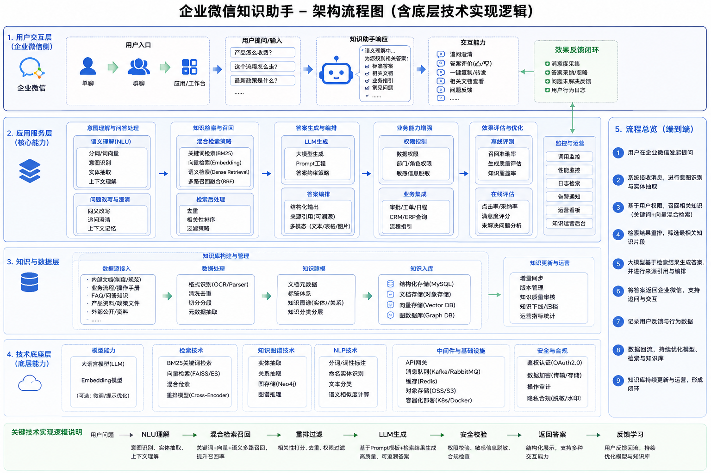
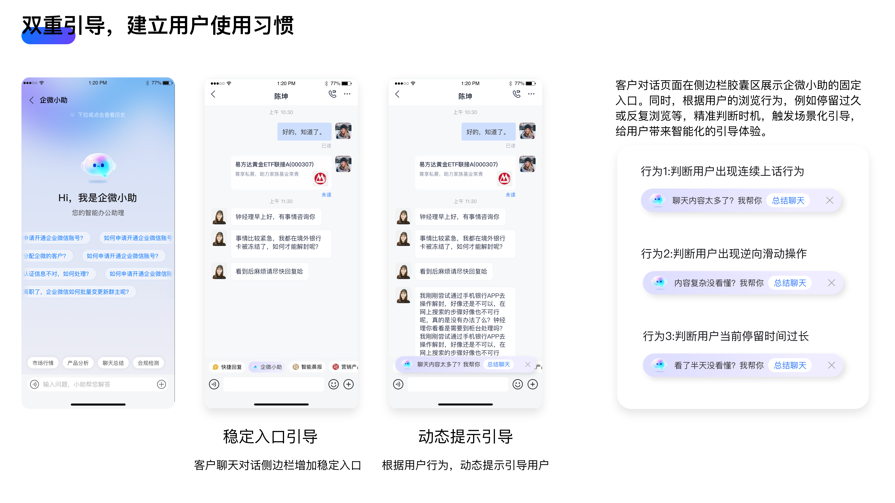
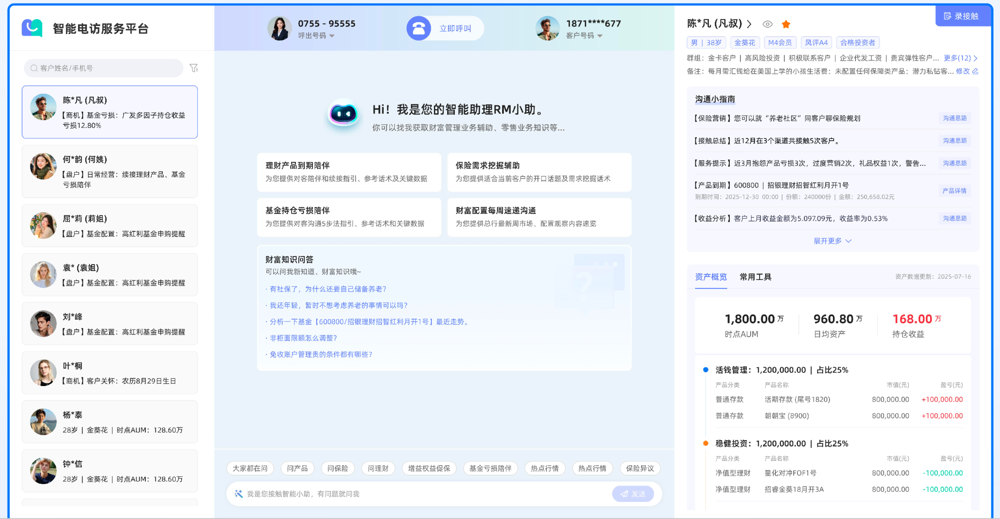

企微小助：基于 LLM+RAG 的智能助理
项目背景
为提升一线客户经理的营销效率，解决知识查找难、商机识别慢、合规风险高等痛点。通过深度嵌入客户经理工作流（侧边栏），实现“AI赋能+人机协同”的闭环经营，对标行业标杆。
核心职责与技术路径
- RAG 知识库构建：整合素材中心、产品库、合规文件，构建高质量向量知识库。
- 意图路由分发：实时解析聊天上下文，精准识别“商机转化”与“客服答疑”链路。
- Human-in-the-loop 闭环：AI 推荐话术支持一键转发及编辑，引入“有用/无用”反馈持续优化模型。
- Agent Tools 设计：上线全域知识快查插件及毫秒级事前合规风控引擎。
系统架构逻辑

（图：企业微信知识助手架构流程图，含底层技术实现逻辑）
用户界面

（图：企业微信知识助手入口）

（图：企微小助手对话能力探索）
财富 W+ AI 外呼流程链路模块
项目背景
针对外呼业务中人工标准不一、合规风险难控等痛点，构建“AI 实时教练 + 智能辅助”系统。集成 ASR、TTS 声纹克隆及知识图谱技术，提升转化并降低人力成本。
核心技术实现
底层与辅助功能
ASR 实时转写（延迟<500ms），TTS 个性化声纹录入与克隆播报，动态触发“弹幕式”话术小抄。
风控与闭环
毫秒级识别违规词汇（如承诺收益），通过采纳反馈实现模型增量学习，F1值达 0.88。
系统架构逻辑

（图：财富W+ AI外呼系统架构流程图）
用户界面

（图：财富W+ AI外呼界面）
华为财经 FSP 战略推演产品
项目背景
解决华为全球 200+ 子公司财务规划复杂、耗时久（6个月）的问题。需要支持 50+ 财务指标的自动化推演，实现高频战略调整。
支持 3-5 年财务规划灵活配置，适配率 100%
季度自动生成 120+ 版三表预测报告
打通 15 个历史版本回溯，追踪规划路径
嵌入 50+ 业务规则，推演执行率达 98%
华为数据地图 DMAP
项目背景
构建公司级元数据驱动平台，解决资产分散、标准不一、血缘模糊等核心治理难题，支撑华为集团数字化转型。
元数据采集与全景可视
对接 15+ 核心系统，自动化采集 8.5 万实体，实现数据秒级定位（<0.8s）。
血缘图谱与质量治理
解析日志构建字段级血缘。内置 150+ 规则模板，自动发现质量问题，治理效率提升 38.2%。